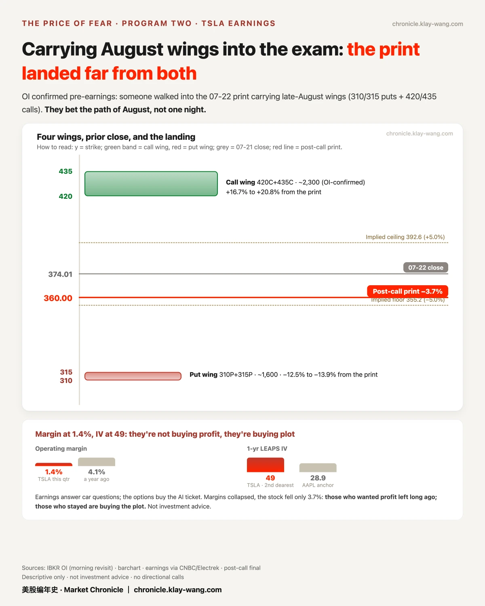
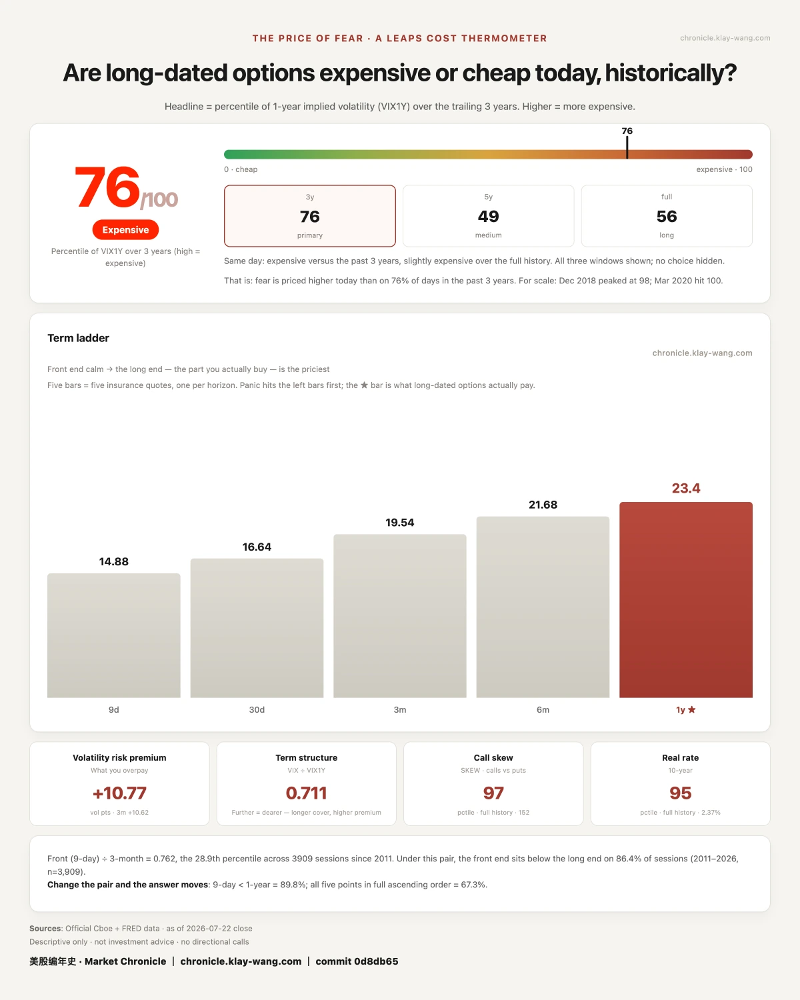

Google CFO 还没念出数字，存储股的期权已经把剧本演完了· 07-23 · 7.20-7.24
Scoreboard first. Before Wednesday's close, the market's pricing for both prints: GOOGL ±5.2%, TSLA ±5.0%. The draw: GOOGL moved 2.1% — four-tenths used. TSLA moved 3.7% — three quarters used. Neither broke the fence.
We called the seating wrong; on the board it goes. The numbers got bought; the bill got digested.
Implied-move scorecard: entry #1.
Program One: Google just added $15B to someone else's stock price
Google reported Wednesday after the close. Everyone watched cloud accelerate 82% and revenue beat. I watched another number: the full-year capex guide raised $15B, to $195-205B.
That money buys compute; compute eats memory. And memory stocks started rallying three days earlier.
Micron +1.9% Monday, +12.1% Tuesday; SanDisk +14.3% Tuesday. The CFO hadn't read the number yet; the options market had already acted out the script. The ledger recorded the other side too: the day after MU's surge, near-month protection came in (Aug 890/905 puts), the group's heaviest put positioning. My read: money is pricing ahead along the AI capex supply chain — the rally buyers and the insurance buyers are the same crowd. Confidence: leans.
How big is the bill? Both companies' free cash flow went negative the same night: Google at −$5.86B, its first negative quarter in decades (Q2 capex $44.9B vs $22.4B a year ago); Tesla at −$1.1B, first since early 2024. Same night, both negative. Not a coincidence.
The irony is in the timing: a mid-July BofA note said three of the four hyperscalers would burn through free cash flow by year-end, with Alphabet the lone exception. Days later, this report crossed out the exception. (Figures compiled from filings and the BofA note.)
Both ends of the migration were visible. The Magnificent Seven shed $2.2 trillion of market cap in June; over the same stretch the three memory makers' shares are up an average of 639%, and Samsung's quarterly profit passed Nvidia's. Money is flowing from cloud shareholders' pockets into suppliers' income statements. The memory-options script we recorded three days ago is the options cross-section of that migration. The line was drawn Wednesday night: before it, the market asked how much growth AI could deliver. After it, the question is who pays for the growth.
But here is the number none of the front pages looked at. This morning's headlines all say watershed night; our ledger holds another reading: Google's Sep-2027 long-dated IV printed 36.78 before earnings, 36.5 after — flat for a second straight day. The headline font and the option price diverged to an extreme: the front page says watershed, the long end says nothing happened.
Either the options market priced all of this long ago (the capex raise was the second this year; the $31B bond sale was old news), or it is wrong. We don't arbitrate. We open a case: October's earnings is the draw — we'll come back and see whether the headlines were right, or the long end was. Someone reports the news; we price it.
A few more prints worth noting from last night: someone bought over ten thousand puts on the 310 line (GOOGL September + a GOOG August sister trade) — paying to ask, what if the AI story drops ten percent; that five-leg program of 11.2k October calls each — asking whether the megacaps have one more leg before earnings season closes; and QQQ laid down sixteen layers of next-January protection in two days — asking whether next January's world will still recognize today's prices.
One more curious one: Google's Class A same-day options traded in single digits all day (0, 1, 2, 34 contracts), while Apple's same-day did 111k and Nvidia's 600k. Intraday we opened a case: is the GOOG/GOOGL dual listing splitting the flow? Same-night check: struck out.
GOOG's Friday strikes did 31k — half of the A shares' 60k. The main table was always GOOGL. The simpler truth: same-day contracts settle at 16:00 and earnings land at 20:00; a ticket that can't cover the print attracts no buyers. The real earnings money sat in Friday's expiry (IV 86-91%). Opened, checked, struck out — the scoreboard's strike-through got its first real use.
Program Two: Tesla — earnings are a process, not an event
Record deliveries of 480,126 (+25%), operating margin down to 1.4%, first negative free cash flow since early 2024. The numbers are split. The options ledger reads calmer.
Open interest confirmed it yesterday morning: someone walked into earnings night carrying four late-August wings (310/315 puts + 420/435 calls, each 12-15% from spot). They bet the path of August, not one night. Final print: −3.7%, far from both wings.
The same night, Jan-2027 deep puts (75% below spot) and 2028 far-dated calls sold side by side. A company where lottery tickets and insurance sell out together: the deep-put buyers' question — does the burn rate outrun robotaxi's arrival — got a physical form last night in that negative free cash flow.
One more pairing only a ledger can give: operating margin at 1.4%, but Tesla's one-year long-dated IV is 49, second dearest in the group; Apple, the steadiest name in the set, sits at 28.9.
How to read that?
The market stopped pricing it as a car company long ago. Earnings answer car questions; the options buy the AI ticket. That's why margins collapsed and the stock fell only 3.7%: the people buying its options never wanted the profit — they wanted the plot. Put 1.4% and 49 side by side, and you have the price tag of the word "story stock."
Thermometer: 76/100. The event has passed — nine-day fear collapsed to 14.88, and the one-year price tag sits at 23.4, unmoved.
The event left, but，the long fear stayed.




No investment advice. No direction calls. No market timing.